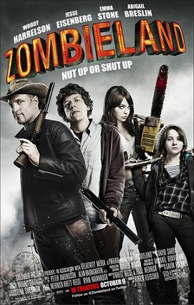

Nesta página estarei listando alguns dos filmes de que mais gosto, trazendo uma pequena sinopse, alguma imagem do filme e um link da página da Wikipédia referente a ele, para caso, você, caro leitor, fique interessado em saber mais sobre ele.
MIB: Homens de Preto (1995)
Agência secreta governamental cuida de fiscalizar os alienígenas que já vivem na Terra, sendo que alguns são vigiados em tempo integral. James Edwards (Will Smith), um novato na organização, em parceria de K (Tommy Lee Jones), um veterano agente, tenta impedir um terrorista intergalático, que planeja assassinar dois representantes de galáxias opostas e destruir o planeta Terra.
O Exterminador do Futuro (1984)

Num futuro próximo, a guerra entre humanos e máquinas foi deflagrada. Com a tecnologia a seu dispor, um plano inusitado é arquitetado pelas máquinas ao enviar para o passado um andróide (Arnold Schwarzenegger) com a missão de matar a mãe (Linda Hamilton) daquele que viria a se transformar num líder e seu pior inimigo. Contudo, os humanos também conseguem enviar um representante (Michael Biehn) para proteger a mulher e tentar garantir o futuro da humanidade.
Forrest Gump: O Contador de Histórias (1994)

Quarenta anos da história dos Estados Unidos, vistos pelos olhos de Forrest Gump (Tom Hanks), um rapaz com QI abaixo da média e boas intenções. Por obra do acaso, ele consegue participar de momentos cruciais, como a Guerra do Vietnã e Watergate, mas continua pensando no seu amor de infância, Jenny Curran.
Tropa de Elite (2007)

Em Tropa de Elite, o dia-a-dia do grupo de policiais e de um capitão do BOPE (Wagner Moura), que quer deixar a corporação e tenta encontrar um substituto para seu posto. Paralelamente dois amigos de infância se tornam policiais e se destacam pela honestidade e honra ao realizar suas funções, se indignando com a corrupção existente no batalhão em que atuam.
Mistério no Mediterrâneo (2019)
Nick Spitz (Adam Sandler) é um policial que há tempos tenta se tornar detetive, mas nunca consegue passar na prova para o cargo. Envergonhado, ele diz para sua esposa (Jennifer Aniston) que trabalha na função, pedindo ao melhor amigo que o ajude nesta mentira. Um dia, ao chegar em casa, Nick é cobrado por Audrey sobre a sonhada viagem à Europa, prometida quando eles se casaram, 15 anos atrás. Pressionado, ele diz que já havia arrumado tudo e, assim, os dois partem em viagem. Ainda no avião, Audrey conhece o milionário Charles Cavendish (Luke Evans), que os convida para um tour a Mônaco a bordo do navio de seu tio (Terence Stamp). O casal aceita a oferta, sem imaginar que estaria envolvido com a investigação em torno de um assassinato em pleno alto-mar.
Zumbilândia (2009)
A população mundial foi dizimada devido a um vírus, variante do mal da vaca louca, que faz com que as pessoas se transformem em zumbis. Poucos são os humanos não infectados, entre eles Columbus (Jesse Eisenberg). Ele é um estudante da Univeridade do Texas, que deseja voltar para sua cidade natal na esperança de encontrar seus pais ainda vivos. Cheio de fobias, o maior medo de Columbus não são os zumbis, mas os palhaços. No caminho ele encontra Tallahassee (Woody Harrelson), que está indo para a Flórida com o objetivo de aniquilar o maior número possível de zumbis.